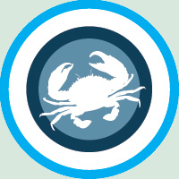

Welcome
The Chesapeake Open will be held at the Potomac Polo Club in Poolesville, Maryland the weekend of August 16-17, 2008. Four different divisions will be offered by the tournament: Elite Open, Open, Womens and Mixed.

The tournament fee will be $420 this year, with part of the fee going towards the Many Hats Institute, a charity in the Washington D.C. area with ties to the owner of the polo fields.
On-site amenities will include lined fields, sideline water stations, food from Baja Fresh, and beer at the end of the day Saturday; brought to you by the folks at the Central Maryland Ultimate Association (CMUA) and the Washington Area Frisbee Club (WAFC).
New this year we are pleased to announce the addition of an official tournament photographer, Kevin Leclaire. Check out samples of his work at www.ultiphotos.com.
Questions or comments, email ChesapeakeOpen@yahoo.com.
Schedules